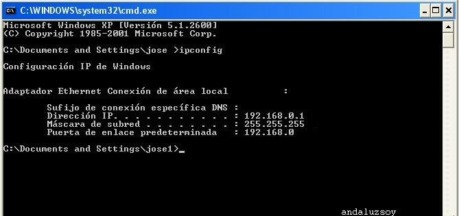
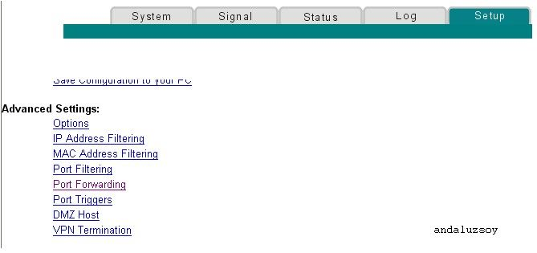
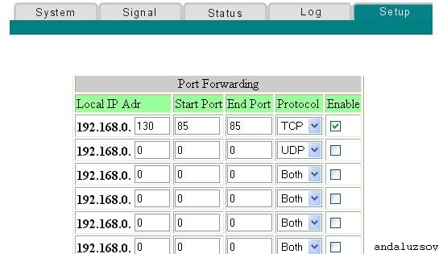
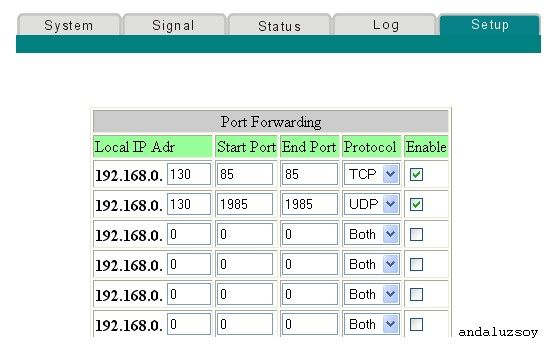
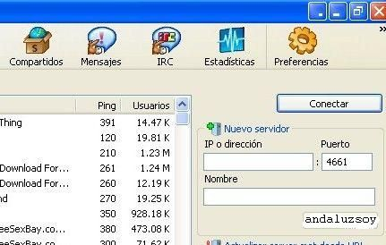
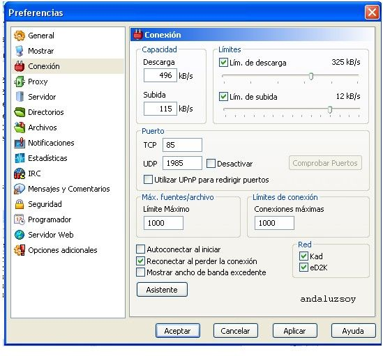

Abrir puertos Webstar Ono
Todos los puertos son igualmente válidos, salvo que esten utilizados por alguna otra aplicación o sean utilizados habitualmente por troyanos.
-Lo primero que haremos será comprobar cual es nuestra ip local, pues la vamos a necesitar para abrir los puertos .
-Si utilizamos windows XP o Vista vamos a Inicio, ejecutar , escribimos CMD y aceptamos se abrirá una ventana y escribimos ipconfig y nos dirá cual es la ip local de este pc.

-Tomamos nota de la ip que nos da pues la necesitaremos. Si tubieramos que abrir puertos para varios pcs, tienen que ser puertos distintos para cada uno y cada pc tiene una ip distinta , ej.
Pc1_________TCP85______192.168.0.130
Pc1_______UDP1985______192.168.0.130
Pc2_______TCP4662______192.168.0.5
Pc2_______UDP4672______192.168.0.5
-Ahora vamos al router.
-Introduce en la barra de direcciones de tu navegador la direccion ip de tu router para entrar a la web de configuracion. 192.168.0.1 o http://192.168.0.1 .
-Clicamos sobre setup.
-Ahora clicamos sobre portforwarding para configurar las entradas que necesitamos para emule .

-Emule necesita dos entradas uno puertoTCP y otro UDP. Vamos a abrir el 85TCP y el 1985UDP.
-Comenzamos por el 85 TCP.


-En local ip adr. introducimos la ip de nuestro pc, la que obtuvimos al pricipio.
-En start port y end port repetimos el mismo número de puerto. En este caso el 85.
-En protocolo seleccionamos en el desplegable el protocolo que necesita cada puerto, en este caso TCP.
-Ahora vamos con el 1985 UDP.
-En local ip adr. introducimos la ip de nuestro pc, la que obtuvimos al pricipio.
-En start port y end port repetimos el mismo número de puerto. En este caso el 1985.
-En protocolo seleccionamos en el desplegable el protocolo que necesita cada puerto, en este caso UDP.
-Marcamos enabled en las entradas que acabamos de configurar y clicamos apply para que se guarden los cambios.
-Ahora tenemos el puerto TCP 85 y UDP 1985 abiertos y vamos a introducirlos en emule.
-Abrimos emule y clicamos sobre preferencias .

-Ahora seguidamente sobre conexión .

-Aquí introducimos los puertos que antes abrimos TCP 85 y UDP 1985 en sus celditas. Aplicamos para que se guarden los cambios y aceptamos .
-Ahora necesitamos reiniciar emule y ya tenemos emule funcionando con los puertos abiertos.
Andaluzsoy